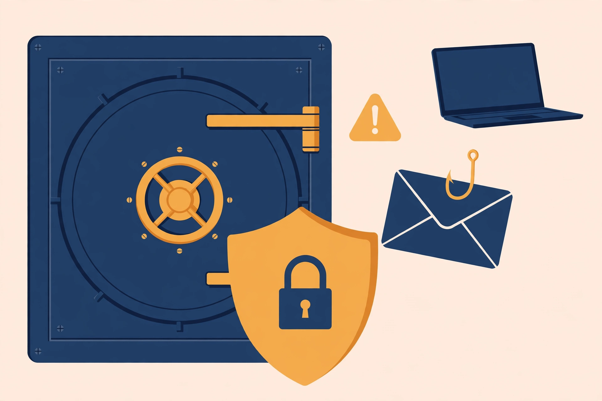

2026년 11월 27일

비밀번호 관리 앱 1Password가 25일 보안 사고를 공개했습니다. 공격자가 직원 한 명의 회사 GitHub 계정을 탈취한 뒤, 비공개 소스 코드에 접근해 백엔드 서비스에 악성 코드를 심었고, 그 코드가 일부 고객의 계정 기록을 내려받았습니다. 회사는 11월 19일 수상한 정황을 포착하고 조사를 시작했습니다.
유출된 정보는 이름과 이메일 주소, 계정·사용자 식별자, 계정 생성 시각과 마지막 로그인 시각, 공개 키, 로그인 프로토콜 설정값, 일부 초대·계정 복구 링크에 들어 있던 토큰 등입니다. 공격자는 회사 소스 코드도 복사하고, 소프트웨어를 만들고 배포하는 CI/CD 시스템에도 접근했습니다.
그래도 조심할 부분은 있습니다. 유출된 이름과 이메일은 피싱에 쓰이기 딱 좋습니다. "보안 사고 때문에 계정을 확인해야 한다"는 1Password 사칭 메일이 올 수 있습니다. 메일의 링크를 누르지 말고, 앱이나 공식 사이트에 직접 들어가서 확인하는 게 안전합니다. 비밀번호를 지키는 회사도 털릴 수 있다는 걸 보여준 사건이라, "우리 계정은 안전하다"는 말보다 "어디서든 피싱을 의심하라"는 교훈이 더 크게 남습니다.
출처: BleepingComputer — 1Password customer data stolen after employee GitHub account breach